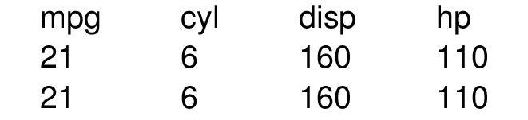

Exporting tables to LaTeX
Gregor de Cillia
2019-06-27
Source:vignettes/export_latex.Rmd
export_latex.RmdThis vignette will showcase how styledtables can be used with LaTeX documents of various kinds (.tex, .Rmd and Rnw). For all subsequent examples, we will use a subset of the mtcars dataset.
Installation
In order to compile the exported LaTeX code, it is necessary to have certain CTAN packages installed. In some cases, the tables are even compiled implicitly via write_png().
One way is to install a standalone compiler via the tinytex package.
This has several advantages
- Tinytex downloads CTAN packages as needed during compilation, so tex dependencies are managed under the hood
- The installation is in the user’s home folder. Therefore, no administative privileges are required to run
install_tinytex()and also to use the binaries downloaded by this function. - The installation only requires two lines of code and works on any platform
Another option is to install the system dependencies directly. In case of ubuntu, the following setup is used on our travis CI machine.
To verify a correct installation of all tex dependencies, the function write_pdf() can be used.
A list of all required tex-packages can be displayed with st_preamble().
tex export
To generate latex code from a table, use the function create_latex_table() and insert the resulting code into your tex document.
tex_code <- create_latex_table(mytable)
cat(tex_code)
#>
#> \begin{tabular}{cccc}
#> \hhline{~~~~}
#> \multicolumn{1}{l}{\begin{tabular}{l}mpg\end{tabular}} &
#> \multicolumn{1}{l}{\begin{tabular}{l}cyl\end{tabular}} &
#> \multicolumn{1}{l}{\begin{tabular}{l}disp\end{tabular}} &
#> \multicolumn{1}{l}{\begin{tabular}{l}hp\end{tabular}}\\
#> \hhline{~~~~}
#> \multicolumn{1}{l}{\begin{tabular}{l}21\end{tabular}} &
#> \multicolumn{1}{l}{\begin{tabular}{l}6\end{tabular}} &
#> \multicolumn{1}{l}{\begin{tabular}{l}160\end{tabular}} &
#> \multicolumn{1}{l}{\begin{tabular}{l}110\end{tabular}}\\
#> \hhline{~~~~}
#> \multicolumn{1}{l}{\begin{tabular}{l}21\end{tabular}} &
#> \multicolumn{1}{l}{\begin{tabular}{l}6\end{tabular}} &
#> \multicolumn{1}{l}{\begin{tabular}{l}160\end{tabular}} &
#> \multicolumn{1}{l}{\begin{tabular}{l}110\end{tabular}}\\
#> \hhline{~~~~}
#> \end{tabular}
writeLines(tex_code, "table.tex")You will need to make sure that the preamble of the document loads the following packages. Otherwise, it won’t be possible to compile the table-code.
pdf and png export
The function write_png(mytable, file = "mytable.pdf") automatizes the above steps
- It writes a standalone tex file based on
st_preamble()andcreate_latex_table(mytable) - It renders the tex file into a pdf using
pdflatex - It performs all cleanup operations such that only the pdf file remains
A very similar function is write_png which converts the pdf document into a png image file, which is easier to use on websites.
Rmd export
In order to use a styledTable inside a Rmd document, the object can just be printed inside a chunk.
```{r, out.width = '50%', fig.align='center'}
mytable
```
In case of html-based output formats (html_document, ioslides_presentation, …), the table is exported to an image file with write_png and the resulting image is included in the document. As shown in the example above, the chunk options out.width and fig.align can be used to modify the position and scale of the table.
In case of latex-based output formats (pdf_document, beamer_presentation, …), the LaTeX code produced by create_latex_table() is inserted in place and the necessary tex-dependencies are automatically included in the preamble via some knitr magic.
Currently, there is no support for output formats like word_document and powerpoint_presentation which are neither based on html not LaTeX. For that usecase, it is recommended to convert the table into an image file using write_png() and include the image manually.

In this case, the chunk options out.width and fig.align can be used in the same way as for html-based output formats.
Rnw export
Currently it is possible to print tables inside Rnw documents to get the same results as in Rmd documents that use a LaTeX-based output (pdf_document, beamer_presentation, …). However, the automatic injection in the preamble only works if knitr is used as the render engine. For Sweave documents, the output of st_preamble() needs to be copied into the preamble as described in the “tex export” section.